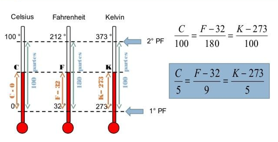

Termometria
Introdução
A termometria é a parte da física responsável pelo estudo da medida e da variação de temperatura.
Temperatura
É a grandeza física associada ao estado de movimento ou à agitação das partículas que compõem os corpos. Ou seja, é a medida do grau de agitação molecular de um corpo.
A relação das partículas com a temperatura ocorre da seguinte forma:
- Quanto maior a agitação das moléculas, maior a temperatura.
- Quanto menor a agitação das moléculas, menor a temperatura.
Medição de temperatura
O instrumento que permite a avaliação da temperatura é o termômetro.
Para a graduação de um termômetro, atribuímos valores arbitrários às temperaturas de dois estados térmicos chamados de pontos fixos:
- 1º ponto fixo: ponto de fusão do gelo sob pressão normal (0°C).
- 2º ponto fixo: ponto de ebulição da água sob pressão normal (100°C).
SE LIGA!: Pressão normal corresponde a 1 atm (atmosfera).
Calor
É a espécie de energia que é transferida de um corpo para o outro, desde que exista entre eles uma diferença de temperatura.
SE LIGA!: A transferência de calor ocorre do corpo mais quente para o corpo mais frio.
Equilíbrio térmico
É uma condição termodinâmica na qual dois ou mais corpos ou substâncias atingem a mesma temperatura após a transferência de calor.
SE LIGA!: Quando as temperaturas dos dois corpos se igualam, a passagem do calor cessa espontaneamente.
Videoaulas
Conceitos Iniciais
Conceitos Iniciais
Escalas termométricas
AS principais escalas termométricas são:
- ESCALA CELSIUS: Seu ponto de fusão vale zero e seu ponto de ebulição vale cem. A unidade dessa escala é chamada de grau Celsius (ºC).
- ESCALA FAHRENHEIT: Seu ponto de fusão vale trinta e dois e seu ponto de ebulição vale duzentos e doze. A unidade dessa escala é chamada de grau Fahrenheit (ºF).
- ESCALA KELVIN OU ESCALA ABSOLUTA (S.I.): Seu ponto de fusão vale 273,15 e seu ponto de ebulição vale 373. O símbolo dessa unidade é (K).
Videoaulas
Escalas termométricas
Escalas termométricas
Conversão entre escalas
As temperaturas exibidas pelas escalas termométricas podem ser convertidas através da seguinte relação:
